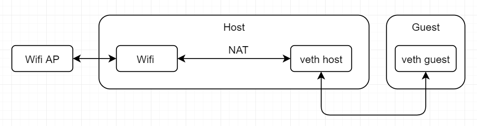

LXC veth NAT
LXC通过虚拟网卡NAT到Wifi获取网络
参考文档
运行架构图

steps
sudo vim /etc/lxc/default.conf
lxc.net.0.type = veth lxc.net.0.flags = up lxc.apparmor.profile = generated
sudo rm /var/lib/lxc/zengjf -rf
sudo ./src/lxc/lxc-create -n zengjf -t busybox -l TRACE -o lxc.log
sudo ./src/lxc/lxc-start -n zengjf -l TRACE -o lxc.log
ifconfig
// ...省略 vethDW1WMT: flags=4163<UP,BROADCAST,RUNNING,MULTICAST> mtu 1500 inet6 fe80::e6f:30bf:5ff:5307 prefixlen 64 scopeid 0x20<link> ether fe:9a:a5:fb:8b:35 txqueuelen 1000 (Ethernet) RX packets 6 bytes 1296 (1.2 KiB) RX errors 0 dropped 0 overruns 0 frame 0 TX packets 16 bytes 2180 (2.1 KiB) TX errors 0 dropped 0 overruns 0 carrier 0 collisions 0 // ...省略
进入系统
sudo ./src/lxc/lxc-console -n zengjf -l TRACE -o lxc.log
貌似无法使用
sudo ./src/lxc/lxc-attach -n zengjf -l TRACE -o lxc.log
可以使用
BusyBox v1.30.1 (Raspbian 1:1.30.1-4) built-in shell (ash) Enter 'help' for a list of built-in commands. / # ifconfig -a eth0 Link encap:Ethernet HWaddr 42:42:53:72:9A:9B BROADCAST MULTICAST MTU:1500 Metric:1 RX packets:0 errors:0 dropped:0 overruns:0 frame:0 TX packets:0 errors:0 dropped:0 overruns:0 carrier:0 collisions:0 txqueuelen:1000 RX bytes:0 (0.0 B) TX bytes:0 (0.0 B) lo Link encap:Local Loopback LOOPBACK MTU:65536 Metric:1 RX packets:0 errors:0 dropped:0 overruns:0 frame:0 TX packets:0 errors:0 dropped:0 overruns:0 carrier:0 collisions:0 txqueuelen:1000 RX bytes:0 (0.0 B) TX bytes:0 (0.0 B) / #
sudo ./src/lxc/lxc-stop -n zengjf -l TRACE -o lxc.log
NAT网络设置
sudo su
echo 1 > /proc/sys/net/ipv4/ip_forward
sudo ifconfig vethDW1WMT 192.168.45.2 netmask 255.255.255.0
容器系统内：
sudo ./src/lxc/lxc-attach -n zengjf -l TRACE -o lxc.log
ifconfig eth0 192.168.45.3 netmask 255.255.255.0
route add default gw 192.168.45.2
sudo iptables -t nat -A POSTROUTING -s 192.168.45.0/24 -o wlan0 -j MASQUERADE
sudo iptables -nvL -t nat
Chain PREROUTING (policy ACCEPT 0 packets, 0 bytes) pkts bytes target prot opt in out source destination Chain INPUT (policy ACCEPT 0 packets, 0 bytes) pkts bytes target prot opt in out source destination Chain POSTROUTING (policy ACCEPT 0 packets, 0 bytes) pkts bytes target prot opt in out source destination 3 252 MASQUERADE all -- * wlan0 192.168.45.0/24 0.0.0.0/0 Chain OUTPUT (policy ACCEPT 0 packets, 0 bytes) pkts bytes target prot opt in out source destination
sudo iptables -t filter -A FORWARD -i wlan0 -o vethDW1WMT -j ACCEPT
sudo iptables -t filter -A FORWARD -o wlan0 -i vethDW1WMT -j ACCEPT
sudo iptables -t filter -L
Chain INPUT (policy ACCEPT) target prot opt source destination Chain FORWARD (policy ACCEPT) target prot opt source destination ACCEPT all -- anywhere anywhere ACCEPT all -- anywhere anywhere Chain OUTPUT (policy ACCEPT) target prot opt source destination
虚拟网卡间ping不通：
容器系统内
ping 192.168.45.2
容器系统eth0自身IP为192.168.45.3，ping不通对应的容器外的网卡
sudo tcpdump -nnt -i vethDW1WMT
tcpdump: verbose output suppressed, use -v or -vv for full protocol decode listening on vethDW1WMT, link-type EN10MB (Ethernet), capture size 262144 bytes 06:34:25.547728 IP 0.0.0.0.68 > 255.255.255.255.67: BOOTP/DHCP, Request from 3e:77:5e:f3:34:c0, length 300 06:34:28.637717 IP 0.0.0.0.68 > 255.255.255.255.67: BOOTP/DHCP, Request from 3e:77:5e:f3:34:c0, length 300 06:34:35.707905 IP 192.168.45.3 > 192.168.45.2: ICMP echo request, id 4609, seq 0, length 64 06:34:36.708270 IP 192.168.45.3 > 192.168.45.2: ICMP echo request, id 4609, seq 1, length 64 06:34:37.708542 IP 192.168.45.3 > 192.168.45.2: ICMP echo request, id 4609, seq 2, length 64 06:34:38.708804 IP 192.168.45.3 > 192.168.45.2: ICMP echo request, id 4609, seq 3, length 64 06:34:39.709062 IP 192.168.45.3 > 192.168.45.2: ICMP echo request, id 4609, seq 4, length 64 06:34:40.737726 ARP, Request who-has 192.168.45.2 tell 192.168.45.3, length 28 06:34:40.737770 ARP, Reply 192.168.45.2 is-at fe:9a:a5:fb:8b:35, length 28
监听容器外网卡vethDW1WMT，如上可知vethDW1WMT已经收到信息，但是没有把数据发给容器系统，本身vethDW1WMT是路由，没有提示ICMP echo reply，说明他把数据发到别的网卡了
sudo tcpdump -nnt -i wlan0
tcpdump: verbose output suppressed, use -v or -vv for full protocol decode listening on wlan0, link-type EN10MB (Ethernet), capture size 262144 bytes IP 192.168.45.2 > 192.168.45.3: ICMP echo reply, id 15873, seq 522, length 64 IP 192.168.45.2 > 192.168.45.3: ICMP echo reply, id 15873, seq 523, length 64 IP 192.168.45.2 > 192.168.45.3: ICMP echo reply, id 15873, seq 524, length 64 IP 192.168.45.2 > 192.168.45.3: ICMP echo reply, id 15873, seq 525, length 64 IP 192.168.45.2 > 192.168.45.3: ICMP echo reply, id 15873, seq 526, length 64 IP 192.168.45.2 > 192.168.45.3: ICMP echo reply, id 15873, seq 527, length 64 IP 192.168.45.2 > 192.168.45.3: ICMP echo reply, id 15873, seq 528, length 64 ARP, Request who-has 192.168.43.1 tell 192.168.43.89, length 28 ARP, Reply 192.168.43.1 is-at c4:9f:4c:b3:3b:52, length 28 IP 192.168.45.2 > 192.168.45.3: ICMP echo reply, id 15873, seq 529, length 64 IP 192.168.45.2 > 192.168.45.3: ICMP echo reply, id 15873, seq 530, length 64
监听容器外网卡wlan0，如上可知vethDW1WMT返回给容器内的信息发给了wlan0，判定为路由不对导致
ip route
default via 192.168.43.1 dev wlan0 proto dhcp src 192.168.43.89 metric 304 169.254.0.0/16 dev vethDW1WMT scope link src 169.254.78.52 metric 212 192.168.43.0/24 dev wlan0 proto dhcp scope link src 192.168.43.89 metric 304 192.168.137.0/24 dev usb0 proto dhcp scope link src 192.168.137.2 metric 203
169.254.0.0/16 dev vethDW1WMT scope link src 169.254.78.52 metric 212
lxc默认网络路由和我们自己设置的默认网络路由不对，所以删除这个默认路由，添加我们自己的网络路由
sudo route del -net 169.254.0.0 netmask 255.255.0.0 vethDW1WMT
貌似删不掉，暂时不管
sudo route add -net 192.168.45.0 netmask 255.255.255.0 vethDW1WMT
route -n
Kernel IP routing table Destination Gateway Genmask Flags Metric Ref Use Iface 0.0.0.0 192.168.43.1 0.0.0.0 UG 304 0 0 wlan0 169.254.0.0 0.0.0.0 255.255.0.0 U 208 0 0 vethDW1WMT 192.168.43.0 0.0.0.0 255.255.255.0 U 304 0 0 wlan0 192.168.45.0 0.0.0.0 255.255.255.0 U 0 0 0 vethDW1WMT 192.168.137.0 0.0.0.0 255.255.255.0 U 203 0 0 usb0
容器系统内这个时候能够正常ping通了
ping 220.181.38.148
PING 220.181.38.148 (220.181.38.148): 56 data bytes 64 bytes from 220.181.38.148: seq=22 ttl=49 time=111.632 ms 64 bytes from 220.181.38.148: seq=23 ttl=49 time=79.067 ms 64 bytes from 220.181.38.148: seq=24 ttl=49 time=84.337 ms 64 bytes from 220.181.38.148: seq=25 ttl=49 time=87.792 ms 64 bytes from 220.181.38.148: seq=26 ttl=49 time=150.535 ms
wget 220.181.38.148
Connecting to 220.181.38.148 (220.181.38.148:80) index.html 100% |*****************************************************| 81 0:00:00 ETA
cat index.html
<html> <meta http-equiv="refresh" content="0;url=http://www.baidu.com/"> </html>
重置网卡名字
sudo ip link set vethDW1WMT down
sudo ip link set vethDW1WMT name vm_host
sudo ip link set vm_host up
ip route详细解释
192.168.42.0/24 dev rndis0 proto kernel scope link src 192.168.42.129
192.168.43.0/24 dev wlan0 proto kernel scope link src 192.168.43.112
参考文档
路由mask: 192.168.42.0/24
后面的字段告诉我们通过哪个设备来和目的地址通信: dev rndis0
对于广播地址来说，它的目标是整一个IP网络，所以目标地址的scope定义为了link
最后一个字段的关键字是src，这个是告诉内核当使用这个设备往外路由信息时，选择的源地址是哪个。
源IP是一个路由条目的重要组成部分，这个源IP的意义在于一个补充作用。匹配还是根据目的IP进行匹配，但是由于在查找路由条目的时候很可能源地址还没有指定。典型的就是没有进行bind的发送情况，通常是随机选择端口和按照一定的规则源地址。这个一定的规则就是在这里的路由条目的src域可以影响。也就是如果进程没有bind一个源地址，将会使用这里src域里面的源地址作为数据包的源地址进行发送。但是如果进程提前bind了，命中了这个条目，就仍然会使用进程bind的源地址作为数据包的源地址。所以说这里的src只是一个建议的作用。